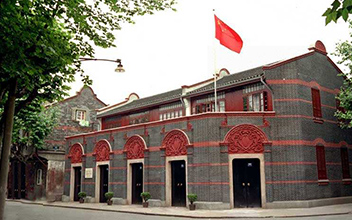
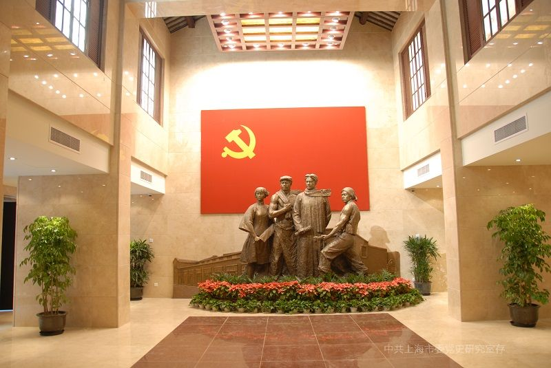
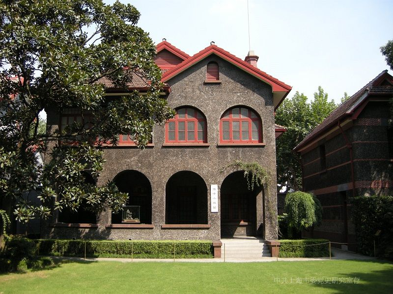
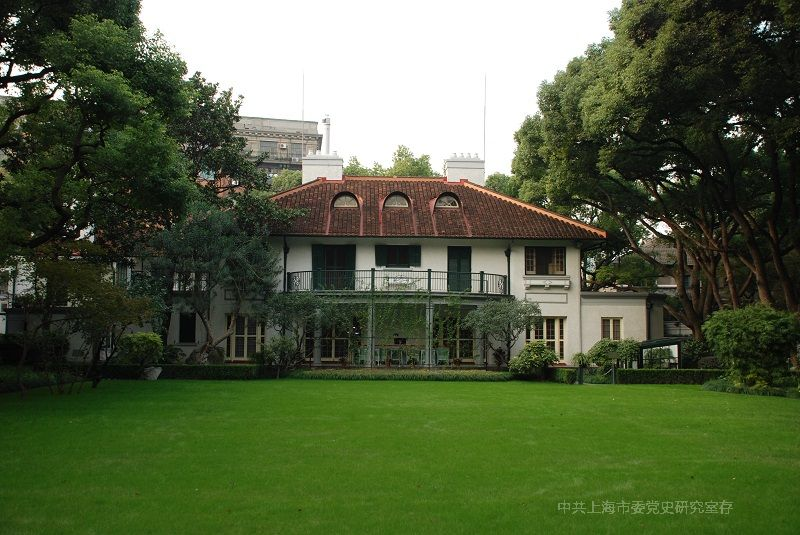

追寻红色足迹，传承革命精神——走进中国共产党的诞生地

中国共产党第一次全国代表大会会址，是中国共产党的诞生地。1921年7月23日，来自全国各地的13名代表在此召开会议，宣告中国共产党正式成立。这座典型的上海石库门建筑，见证了中国历史上开天辟地的大事变。

1922年7月16日至23日，中国共产党第二次全国代表大会在此召开。大会制定了党的最高纲领和最低纲领，第一次明确提出了彻底的反帝反封建的民主革命纲领，为中国革命指明了方向，在中国共产党历史上具有重要地位。

上海孙中山故居是孙中山先生与夫人宋庆龄于1918年至1925年在上海的寓所。在这里，孙中山先生完成了《孙文学说》《实业计划》等重要著作，并在此会见了李大钊、列宁特使越飞等历史人物，推动了第一次国共合作。

上海宋庆龄故居是宋庆龄女士一生中居住时间最长的地方，从1949年春迁居于此，直至1981年逝世。这里不仅是她的居所，更是她从事国务活动、开展国际交往的重要场所，见证了她为新中国建设与国际和平事业做出的卓越贡献。
四个景点均位于上海市中心，地铁1号线、2号线、10号线、13号线均可到达，建议乘坐公共交通出行。
以上四个景点均为免费参观，需携带有效身份证件登记入馆。部分场馆建议提前通过官方渠道预约。
各场馆一般为 9:00—17:00（16:00 停止入馆），周一闭馆。节假日开放时间请关注各馆官方公告。
建议从中共一大会址开始按顺序游览，沿途可步行体验上海老城区的独特风貌，感受历史与现代的交融。